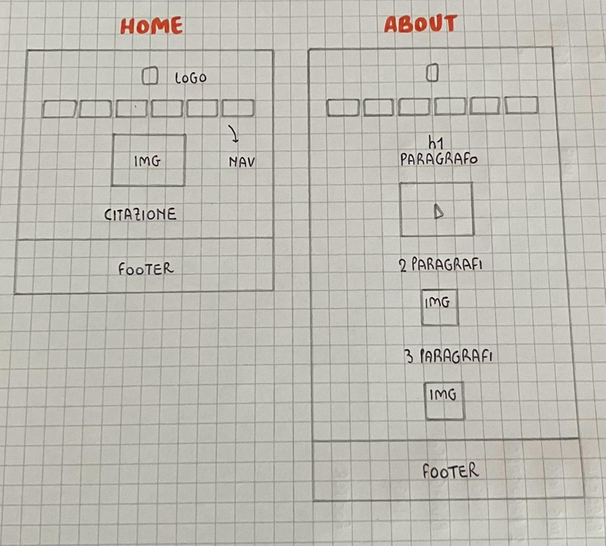
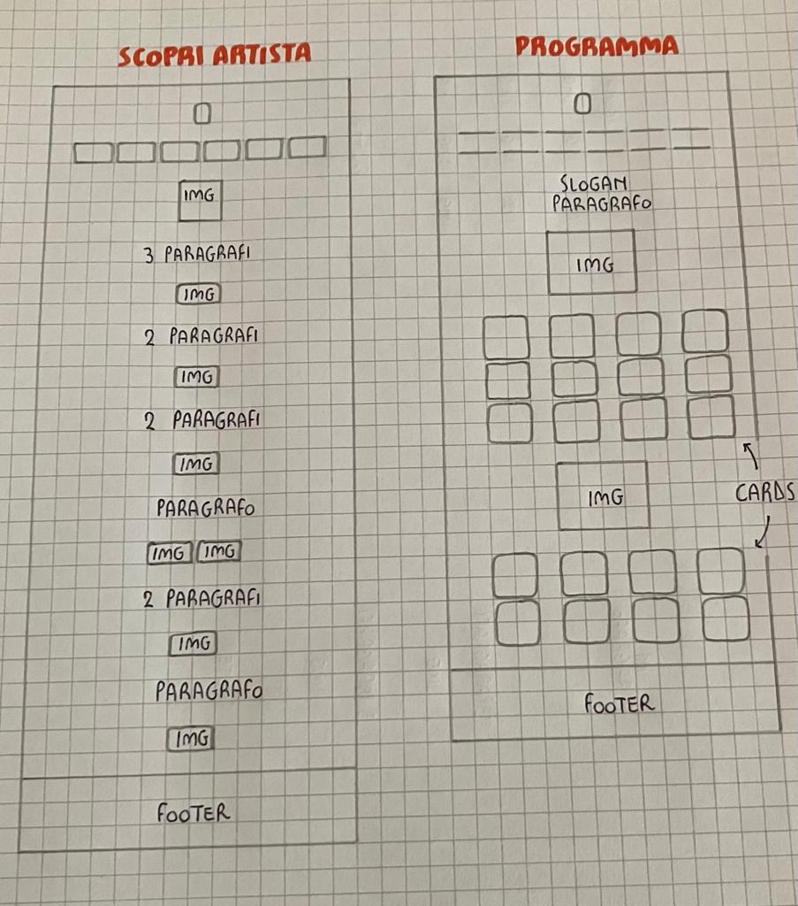
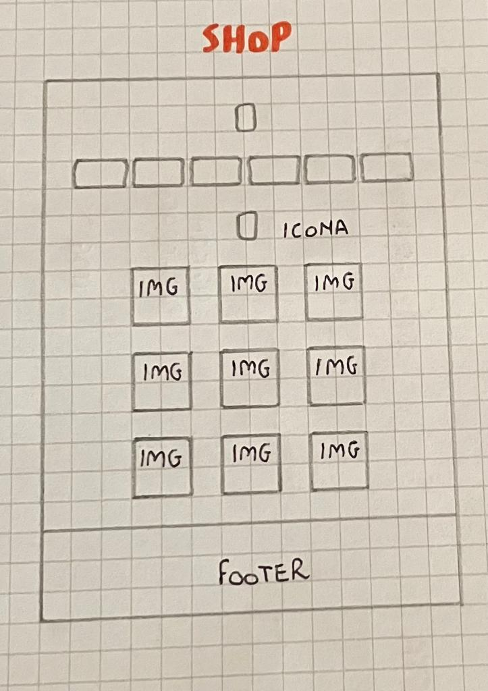
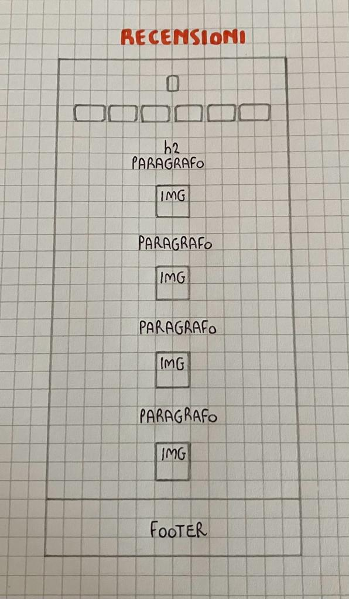

Documentazione
Abstract
Il sito racchiude tutte le informazioni in merito al Marrageddon Festival, l'evento musicale organizzato e diretto dal rapper italiano Marracash, ed è stato realizzato principalmente a scopo informativo. L'obiettivo è raccontare quanto successo nel corso delle due serate, a partire da alcune curiosità biografiche dell'artista fino alle recensioni finali di alcune delle riviste musicali più importanti.
Il target utente al quale il sito si rivolge comprende tutti gli appassionati di musica hip hop, tendenzialmente giovani, pronti a immergersi nel mondo del rap rivivendo un festival che d'ora in avanti sarà parte della storia musicale italiana.
Project Management Plan
Benchmarking
Obiettivi
“Marrageddon Festival” ha lo scopo di riunire tutte le informazioni riguardanti l'evento musicale in un unico sito web semplice e chiaro da utilizzare e dal quale inoltre è possibile accedere a diversi servizi, come lo shop online del brand personale del rapper.
Target utente primario
Giovani under 30
Tutti gli appassionati di musica rap
Competitors
“Ferrara Buskers Festival” è il sito promozionale del festival degli artisti di strada, tenuto annualmente a Ferrara.
La pagina web contiene informazioni ordinate e coerenti, che vanno incontro a tutte le possibili esigenze dell'utente, sia italiano che straniero;
“Rock in Rio” è il sito dedicato all'evento rock della durata di una settimana organizzato a Rio de Janeiro, in Brasile.
La navigazione è semplice grazie all'intuitività dei contenuti ma l'utente incontra inevitabilmente delle difficoltà nella lettura di alcune parti a causa del colore del testo troppo simile al colore dello sfondo, rendendolo così quasi invisibile.
Struttura e layout
Architettura del sito

Wireframe

Look and feel
Font: Roboto (Bold 700 per i titoli; Medium 500 per lo slogan; Light 300 per i testi);
Palette colori: rgb(255, 165, 0) per il titolo principale e lo slogan;
rgb(138, 43, 226) per i link a Instagram e allo shop online.
Linguaggi e strumenti
Linguaggi web utilizzati
HTML
CSS
Strumenti utilizzati
Visual Studio Code come text editor
Canva per il logo
Favicon per l’icona del sito visualizzabile sul browser
Bootstrap per la navbar e le cards
Google Font per le font
Microsoft Clipchamp per le modifiche del video
Paint3D per le modifiche delle immagini
Github per la pubblicazione
Comunication Strategy
Background
Quanto è già stato fatto e quanto è efficace il risultato?
Cosa manca e perchè non è efficace ciò che esiste?
“Ferrara Buskers Festival” è stato molto utile per creare il mio progetto essendo un sito contenente temi simili al “Marrageddon Festival”. Grazie alla chiarezza con cui sono scritte le informazioni e alla coerenza generale del sito, ho potuto prendere ispirazione su alcune parti da inserire anche all'interno della mia pagina web.
Per quanto riguarda il sito dedicato all'evento rock brasiliano “Rock in Rio”, ho trovato l'organizzazione dei contenuti molto intuitiva e coerente ma salta subito nell'occhio l'errore riguardo alla scelta dei colori del testo e dello sfondo, troppo simili l'uno all'altro. Per questo, nella produzione del mio progetto, ho fatto molta attenzione a creare un acceso contrasto tra le diverse tonalità di colore.
Obiettivi comunicativi
Quali scelte sono state fatte nel progetto e quali sono gli obiettivi?
Per il mio progetto, ho ritenuto necessario organizzare i contenuti in maniera semplice e chiara, in modo che gli utenti siano facilitati nella ricerca di informazioni riguardanti l'evento. Il sito web, creato a scopo informativo, racchiude sia curiosità biografiche sul rapper sia opinioni e commenti successivi al festival. L'obiettivo che mi pongo è quello di raggiungere almeno 50 visite sul sito web.
Target audience e messaggio
A chi si rivolge il sito?
Il progetto che ho creato intende rivolgersi ad un gruppo demografico specifico che include giovani under 30, principalmente italiani, facilmente raggiungibili da social network come Facebook, Instagram e Whatsapp.
Il target secondario comprende in generale tutti gli appassionati di musica hip hop, interessati a immergersi in due delle più grandi metropoli in Italia che hanno avuto la fortuna di ospitare alcuni tra gli artisti più rilevanti nella scena rap.
Quale messaggio trasmette il sito?
Mi piacerebbe che, promuovendo il primo festival rap italiano, il target audience si rendesse conto del percorso fatto da questo genere musicale nel corso degli anni e si appassionasse all'hip hop. In questo modo, se il Marrageddon dovesse diventare un format annuale, potrebbe essere ancora più apprezzato.
Promozione
Come intendo promuovere il mio sito?
Per promuovere il mio progetto ho utilizzato soprattutto i social media, come Instagram e Whatsapp, ritenendoli i mezzi a disposizione più in linea con il target utente a cui volevo rivolgermi.
Valutazione dei risultati
Ho raggiunto gli obiettivi che mi sono prefissata?
Per valutare il successo del mio progetto ho utilizzato Google Analytics, con il quale è possibile monitorare il numero di visite sul sito.